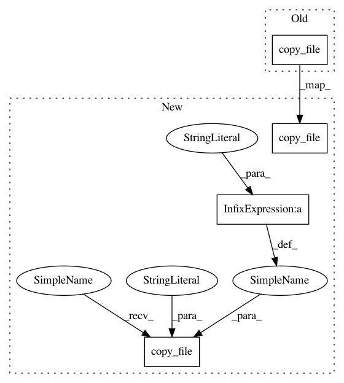

49e71928c659cb0dfbba5575798bff3a96230876,speech_kaldi_export.py,,,#,139
Before Change
//
misc.copy_file ("data/src/speech/kaldi-run-lm.sh", "%s/run-lm.sh" % work_dir)
misc.copy_file ("data/src/speech/kaldi-run-am.sh", "%s/run-am.sh" % work_dir)
misc.copy_file ("data/src/speech/kaldi-run-nnet3.sh", "%s/run-nnet3.sh" % work_dir)
misc.copy_file ("data/src/speech/kaldi-cmd.sh", "%s/cmd.sh" % work_dir)
misc.copy_file ("data/src/speech/kaldi-path.sh", "%s/path.sh" % work_dir)
misc.mkdirs ("%s/conf" % work_dir)
After Change
misc.copy_file ("data/src/speech/kaldi-run-lm.sh", "%s/run-lm.sh" % work_dir)
// misc.copy_file ("data/src/speech/kaldi-run-am.sh", "%s/run-am.sh" % work_dir)
misc.copy_file ("data/src/speech/kaldi-run-nnet3.sh", "%s/run-nnet3.sh" % work_dir)
misc.copy_file ("data/src/speech/kaldi-run-chain.sh", "%s/run-chain.sh" % work_dir)
misc.copy_file ("data/src/speech/kaldi-cmd.sh", "%s/cmd.sh" % work_dir)
misc.copy_file ("data/src/speech/kaldi-path.sh", "%s/path.sh" % work_dir)
misc.mkdirs ("%s/conf" % work_dir)
misc.copy_file ("data/src/speech/kaldi-mfcc.conf", "%s/conf/mfcc.conf" % work_dir)
misc.copy_file ("data/src/speech/kaldi-mfcc-hires.conf", "%s/conf/mfcc_hires.conf" % work_dir)
misc.copy_file ("data/src/speech/kaldi-online-cmvn.conf", "%s/conf/online_cmvn.conf" % work_dir)
misc.mkdirs ("%s/local" % work_dir)
misc.copy_file ("data/src/speech/kaldi-score.sh", "%s/local/score.sh" % work_dir)
misc.mkdirs ("%s/local/chain" % work_dir)
misc.copy_file ("data/src/speech/kaldi-run-chain-common.sh", "%s/local/chain/run_chain_common.sh" % work_dir)
misc.mkdirs ("%s/local/nnet3" % work_dir)
misc.copy_file ("data/src/speech/kaldi-run-ivector-common.sh", "%s/local/nnet3/run_ivector_common.sh" % work_dir)
//
// main
//
In pattern: SUPERPATTERN
Frequency: 3
Non-data size: 4
Instances
Project Name: gooofy/zamia-speech
Commit Name: 49e71928c659cb0dfbba5575798bff3a96230876
Time: 2017-11-04
Author: guenter@zamia.org
File Name: speech_kaldi_export.py
Class Name:
Method Name:
Project Name: gooofy/zamia-speech
Commit Name: 0fdb8c9501c05c71cdbbcef9793bd462c1d2e0bd
Time: 2017-10-13
Author: guenter@zamia.org
File Name: speech_sphinx_export.py
Class Name:
Method Name: export_sphinx_case